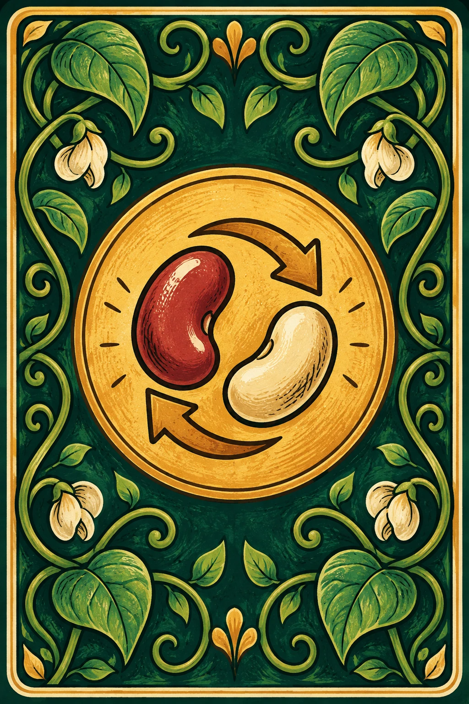

친구들과 플레이할 때 사용할 이름이 필요합니다.
4~5명이 모이면 시작할 수 있습니다.

5라운드 종료 · 모든 밭을 자동 수확했습니다.
4~5명 · 각자 5차례 · 금화가 가장 많은 사람이 승리합니다. 동점이면 공동 승리!
시간이 끝나면 자동 진행합니다. 자동 심기는 같은 콩 밭 → 빈 밭 → 다음 보상까지 진행률이 낮은 밭을 수확한 순서입니다. 수확한 카드는 더미가 떨어지면 다시 섞습니다. 마지막에는 밭만 수확하고, 남은 손패는 0점입니다.
제안 수락 시 낼 콩은 손패 뒤쪽부터 자동 선택하고, 부족하면 내 차례의 공개 카드를 사용합니다. 수락 전 제안에 적힌 교환 내용을 확인하세요.
이 게임은 짧은 수업 시간에 맞춘 자체 규칙으로 진행합니다.
이 밭을 지금 비우면 0금화입니다. 그래도 수확할까요?